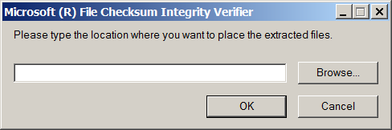

В Windows есть стандартная консольная программа FCIV для подсчета контрольных сумм MD5 и SHA1, но она по-умолчанию не установлена.
Чтобы ее установить, надо зайти на страницу:
http://support.microsoft.com/kb/841290
и скачать файл Windows-KB841290-x86-ENU.exe:
Download the File Checksum Integrity Verifier utility package now.
http://download.microsoft.com/download/c/f/4/cf454ae0-a4bb-4123-8333-a1b6737712f7/Windows-KB841290-x86-ENU.exe
Далее надо запустить этот файл на инсталляцию, после чего будет доступна программа fciv.exe. Во время инсталляции будет задан вопрос, куда распаковать файлы программы (там всего-то распаковывается два файла - сам exe-файл программы и readme.txt):

Можно ответить c:\windows\system32 чтобы не задавать системный путь для запуска программы. Если же установить в другое место, например в каталог c:\fciv , то нужно будет добавить путь к этому каталогу в системную переменную PATH.
Usage
Syntax
fciv.exe [Commands] <Options>
Commands
- -add file | dir: Compute the hash and send it to an output device (default screen). The dir parameter has the following options:
- -r: Recursive.
- -type: Specify file type. For example, -type *.exe.
- -exc file: Do not compute these directories.
- -wp: Do not store the full path name. (By default, FCIV stores the full path name.)
- -bp: Remove the base path from the path name of each entry.
- -list: List entries in the database.
- -v: Verify hashes. The -v option has the following option:
- -bp: Remove the base path from the path name of each entry.
- -?, -h, or -help: Open extended help.
Options
- -md5, -sha1, or -both: Specify hash type. (By default, MCIV uses -md5.)
- -xml db: Specify database format and name.
Note When you use the -v option to verify a hash, FCIV also sends a return error code to indicate whether a hash is verified. A zero (0) indicates success, and a 1 indicates failure. With the return error code, you can use FCIV in automated scripts to verify hashes.
Example usage
- To display the MD5 hash of a file, type the following command at a command prompt:
fciv.exe filename
Note filename is the name of the file.
- To compute a hash of a file, type a command line that is similar to any one of the following command lines:
fciv.exe c:\mydir\myfile.dll
fciv.exe c:\ -r -exc exceptions.txt -sha1 -xml dbsha.xml
fciv.exe c:\mydir -type *.exe
fciv.exe c:\mydir -wp -both -xml db.xml
- To list the hashes that are stored in a database, type a command line that is similar to the following command line:
fciv.exe -list -sha1 -xml db.xml
- To verify a hash in a file, type a command line that is similar to any one of the following command lines:
fciv.exe -v -sha1 -xml db.xml
fciv.exe -v -bp c:\mydir -sha1 -xml db.xml